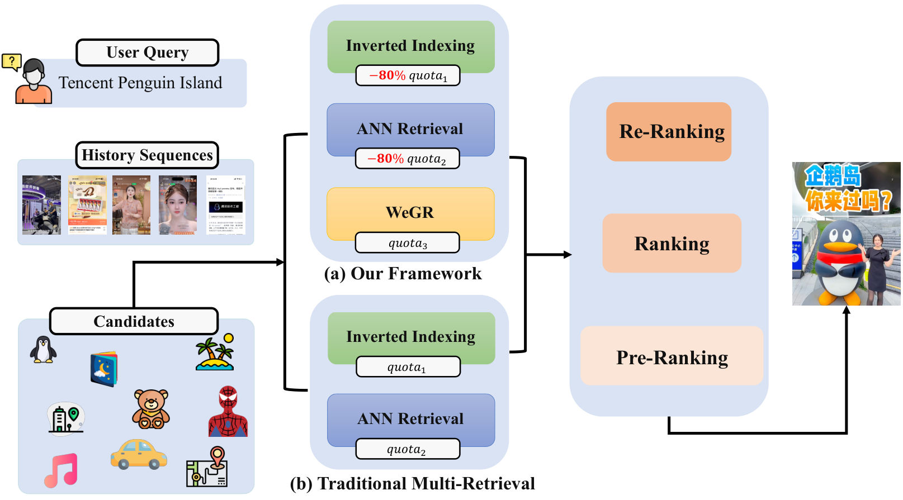
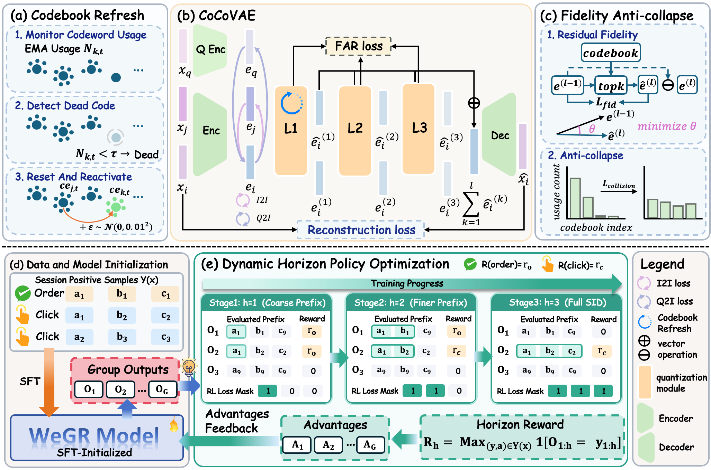
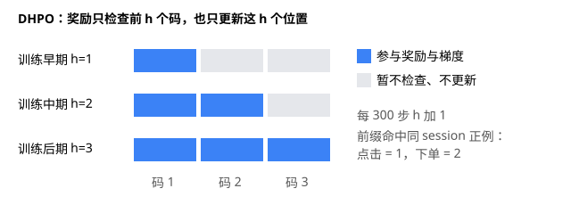
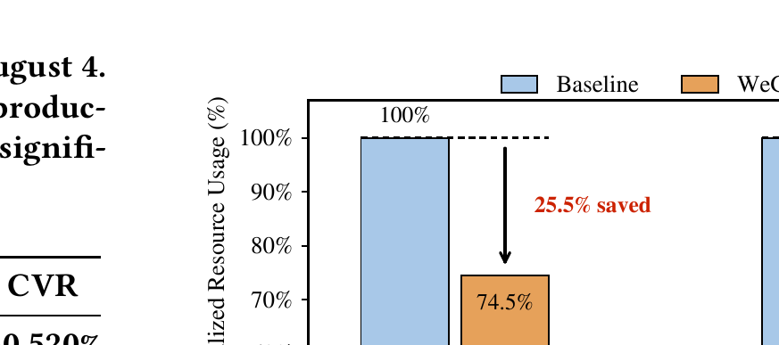
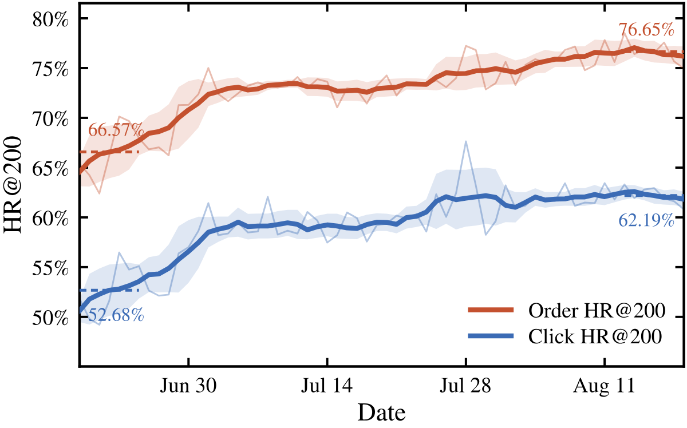

WeGR 是微信电商搜索上线的生成式召回系统：一个 GPT-2 Small 大小的模型读入搜索词和用户上下文，直接逐个“写出”商品的编号，用它替掉传统多路召回中的大部分候选。论文要解决两件事：一是怎么给商品编号，既带上“经常被一起点击”的行为信息，又不让大量编码闲置；二是用点击和下单做强化学习时，奖励太稀疏学不动。六周线上实验中，砍掉其他召回通道 80% 候选的版本让订单提升 2.539%、点击率提升 1.508%，CPU 和 GPU 用量分别下降 25.5% 和 26.1%。离线看，强化学习这一步的净收益其实不大，点击 HR@6 只比监督学习高 0.5 个点，而且几乎全部来自“奖励视野逐步加长”这一个设计 。
1. 问题：生成式召回卡在编号和奖励上
传统电商搜索是一条流水线：倒排索引、向量检索等几路召回各自捞一批候选，合并后交给粗排、精排逐层筛选。每多一路召回就多一份维护成本，粗排也要多算一批商品。生成式召回换了思路：给每个商品分配一串短的离散编码，即语义 ID（下文简称 SID），让模型像写句子一样逐个生成这串编码，生成出哪个编码就召回哪件商品。

左 (a) 是 WeGR 的做法，右 (b) 是传统多路级联（论文图 1）。注意 (a) 中倒排和向量两路的配额都被砍掉 80%，空出的位置交给 WeGR。 SID 的构造有两条常见路线。一条是先用上游模型得到商品向量，再逐层做残差聚类，编码用得比较均匀，但行为信息只存在于上游向量里，逐层量化时会被慢慢冲淡。另一条是端到端地学习编码和码本，可以直接加入行为监督，但每层只更新离输入最近的那个码字，很多码字长期得不到训练，最后大量商品挤在少数编码上，作者称之为码本坍缩。
生成端的问题是奖励稀疏。用户点了某件商品，模型必须把三层编码全部写对才能拿到奖励。采样 8 条很可能一条都不中，组内奖励全为 0，GRPO（一种在同一组采样内部比较奖励高低的强化学习算法）算出的优势也全为 0，这组样本就什么也学不到。已有做法要么加大采样量，成本上升；要么引入排序模型的打分当作稠密奖励，但这些打分带着曝光偏差和业务规则。
2. 编号器：先把行为信号放进连续向量

WeGR 全景（论文图 2）。上方 (a)–(c) 是编号器：(a) 重新激活闲置码字，(b) 用“搜索词–商品”和“商品–商品”两种共现关系指导编码，(c) 两个正则项防止编码挤在一起；下方是 DHPO 的训练流程。 编号器叫 CoCo-VAE，用三层残差量化给商品编号，三层码本大小分别为 16384、128、128。行为信号只加在量化之前的连续向量上，用两个对比损失实现：同一搜索词下被点击过的商品，向量要靠近搜索词；在用户历史交互里经常一起出现的商品，向量要互相靠近（论文没有说明“一起出现”按同一会话还是别的范围算）；两个损失都把同一批次里的其他商品当负样本。作者特意没有在离散码本上强迫它们共用编码，因为那样会把语义不同的商品硬塞到同一个 SID 下。
防止坍缩的手段有三处。第一处是第一层的码本刷新：用滑动平均统计每个码字最近的使用次数，低于阈值就用一个活跃码字加少量高斯噪声重新初始化。只刷新第一层，是因为深层频繁重置会打乱残差分解。第二是保真损失：每个样本不只更新最近的码字，而是取几个最相近的码字按相似度加权，要求加权结果接近输入残差，让更多码字得到梯度。第三是碰撞惩罚：计算两个样本在码字上软分配分布的重叠，重叠越大惩罚越大。
论文还统计了码本利用率，也就是码本里有多大比例的编码真的分到了商品。第一层的 16384 个编码，CoCo-VAE 和残差聚类都 100% 用上；三层编码一共能拼出 16384×128×128（约 2.7 亿）种组合，其中真正被商品用上的比例，CoCo-VAE 是 22.17%，残差聚类是 21.33%，差不多。给第三层强制做均衡，这个组合利用率能提到 52.30%，召回反而变差，所以作者提醒，利用率只是中间指标，强行均衡会把无关商品塞进同一个编码，最终要看召回效果。
3. DHPO：奖励视野由短到长
DHPO（动态视野策略优化）是本文对 GRPO 的改造，想法很直接：整串写对太难，就先只检查第一个码。只要生成的前 h h h

DHPO 的动态视野（自绘示意）。蓝色格子表示这一阶段既参与奖励计算、也会被更新的位置。 关键细节是更新范围和奖励范围同步。前缀对上只说明前 h h
作者还加了多正例监督微调：同一次搜索里用户点过的所有商品都当作正确答案，用逐词预测损失监督，权重 0.5。它的作用是兜底，当一组采样奖励没有差异、强化学习信号失效时，模型仍然有稳定的监督，不至于丢掉监督学习阶段学到的召回能力。线上每天先做一轮监督学习，再做强化学习。
4. 离线实验：编号器贡献大，强化学习贡献小
离线数据是 2026 年 6–7 月共 31 天的搜索日志，前 30 天训练，最后一天测试，点击和下单测试集各 2 万次搜索。因为只有一天测试，下面的离线差距都没有方差可参照。所有强化学习方法都从 CoCo-VAE 的监督学习模型出发。
方法 点击 HR@6 点击 HR@200 下单 HR@6 下单 HR@200 残差聚类 + 监督学习 0.2641 0.4869 0.4051 0.6613 CoCo-VAE + 监督学习 0.2759 0.5093 0.4103 0.6732 直接用 GRPO 0.2588 0.4437 0.3910 0.6098 GRPO + 多正例监督 0.2764 未报告 0.4160 未报告 排序模型打分作奖励 0.2790 未报告 0.4172 未报告 DHPO 0.2810 0.5108 0.4217 0.6763
HR@K 对每次搜索看一个是否：前 K 个召回结果里有没有用户点击（或下单）的商品，有记 1、没有记 0，再对所有测试搜索取平均。编号器带来的提升最明显：点击 HR@6 从 0.2641 到 0.2759，HR@200 从 0.4869 到 0.5093。消融里，去掉码本刷新、保真损失或碰撞惩罚，点击 HR@6 分别跌到 0.2371、0.2437、0.2492，都低于不加行为信号的残差聚类；去掉两种行为信号只跌到 0.2650 和 0.2704。这说明 CoCo-VAE 的收益首先依赖编码空间健康，行为信号是在此基础上的加分 。
强化学习那一侧值得细看。直接套用 GRPO，各项指标都比监督学习还差，点击 HR@200 从 0.5093 掉到 0.4437，说明稀疏奖励会破坏已有的召回能力。加上多正例监督后回到 0.2764，和监督学习的 0.2759 几乎一样，也就是说它只是把损失补了回来。真正带来净提升的是动态视野，再加 0.0046，最终 0.2810。相对监督学习，DHPO 的点击和下单 HR@6 分别提升 1.85% 和 2.78%，在 HR@200 上提升更小。
作者还对比了用工业排序模型的连续打分作为稠密奖励的做法，DHPO 略好。作者的解释是排序模型只在上游召回筛过的商品上训练，对生成式召回探索到的长尾商品打分不可靠，组内归一化又会把噪声放大成虚假的优势。这个解释合理，但两者差距只有 0.002 到 0.0045，论文没有报告多次运行的方差，离线结论只能算方向性证据。
5. 线上效果、资源与长期表现
线上 A/B 实验从 6 月 22 日跑到 8 月 4 日，所有结果 p<0.05，分三个版本逐步替换旧召回。
版本 订单 点击率 转化率 平均延迟 V1.0 只新增一路 +1.579% +1.108% +0.520% 不变 V1.1 砍掉其他通道 60% 候选 +1.962% +0.884% +0.950% −15.6 ms V1.2 砍掉其他通道 80% 候选 +2.539% +1.508% +1.381% −21.7 ms
砍得越多效果越好，说明收益不靠扩大候选集，WeGR 的候选质量高于被替换掉的那部分。V1.2 中进入粗排的商品减少 38.10%，CPU 和 GPU 只省了约四分之一，因为召回、请求解析等固定开销还在。

V1.2 上线后的资源占用（论文图 3）。基线记为 100%，CPU 降到 74.5%，GPU 降到 73.9%。 分人群看，收益集中在信息少或变化快的用户，作者认为这说明在行为数据稀疏时，语义编码能补上传统召回缺的信号。作者按生命周期把用户分成六组：先分新用户和老用户，每类再按近期使用情况分成活跃、回流（一度不用、最近又回来）和流失（已经较长时间不用）三种，交叉得到六组。比如“回流新用户”是注册不久、中间停用过、最近又回来的用户。论文没有给出划分用的天数。回流新用户订单提升 9.855%，流失新用户转化率提升 7.382%，活跃老用户订单只提升 1.611%。按搜索词频次分，低频词订单提升 3.24%，高频词订单提升 3.51%、点击率提升 2.73%；中频词点击率提升 0.99%，订单和转化率却没有显著变化。作者坦承这种差异的机制还没查清。

WeGR 每日点击与下单 HR@200（论文图 4），粗线为七日滑动均值，阴影为标准差。 两个月里，线上点击 HR@200 的七日均值从 52.68% 升到 62.19%，下单从 66.57% 升到 76.65%，波动也明显收窄，都高于离线结果。作者归因于每天更新、累积了更多数据。不过曲线在 6 月底和 7 月下旬各有一次台阶式上升，论文没有说明是否对应版本切换。随着 WeGR 占据更多曝光位，用户的点击也越来越多地落在它召回的商品上，这种反馈循环本身就可能抬高它的命中率，读这条曲线时需要考虑进去。
6. 局限与实践意义
论文没有单独的局限章节。作者提到的是中频词收益机制未明，以及直播搜索的迁移实验只分别验证了编号器和 DHPO，CoCo-VAE 的点击 HR@6 比残差聚类高 8.28%，DHPO 比监督学习高 1.05%，并没有把整套系统搬过去。此外，商品总数、每个 SID 下的商品冲突如何处理、束搜索宽度、训练样本量和硬件都没有公开；离线只测了一天、没有方差，离线时间窗口和线上实验也有重叠。
对其他搜索或推荐场景，最值得带走的是两点。第一，只要物品 ID 是分层的，就可以先在粗粒度上给奖励，再逐步细化，并且只更新已被验证的那部分位置，这不需要额外训练打分模型。第二，强化学习之前先确认编码空间健康：码字利用和碰撞的问题，对最终效果的影响比多加一种行为信号更大。上线节奏也可以参考，先作为新增一路并行跑，确认有效后再逐步削减旧通道的配额。